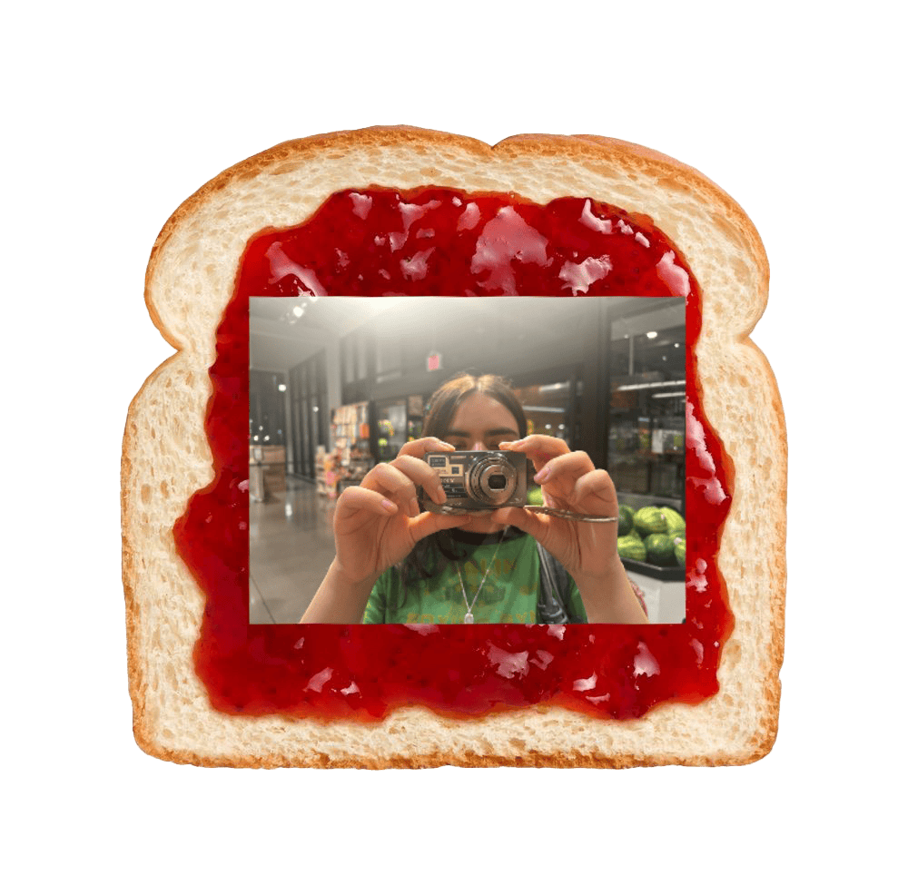
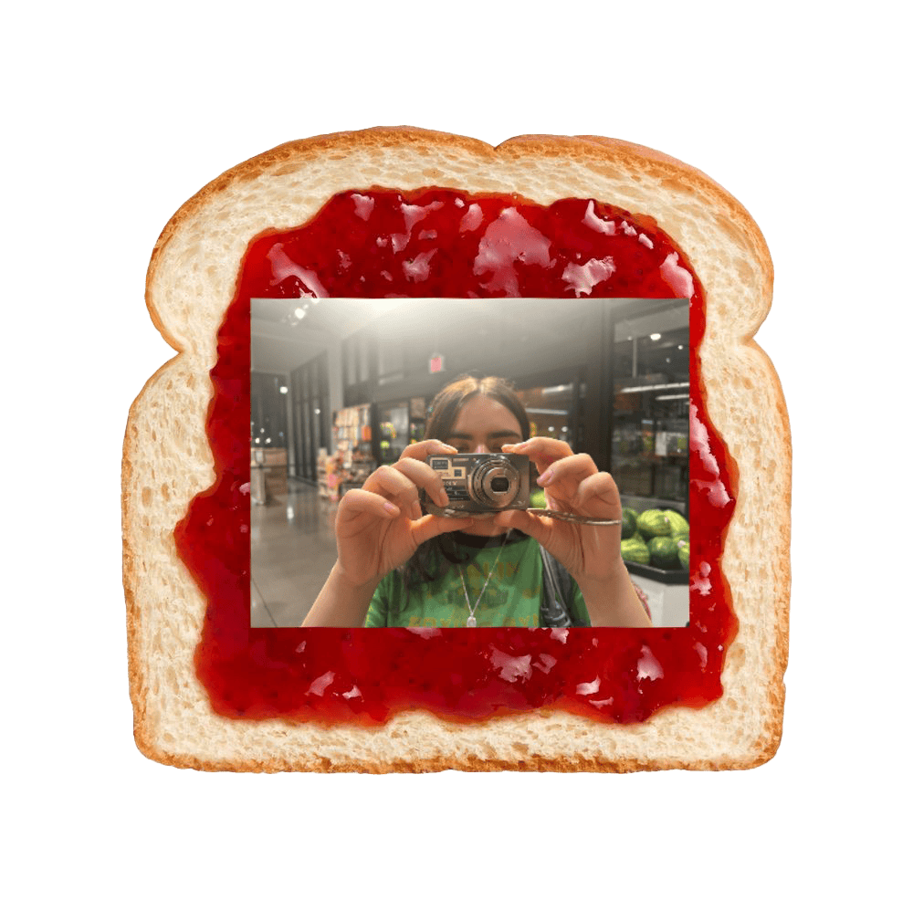

Laura • Martinez • Memories
Welcome to my nostalgic digital journal. Explore comfort media, playlists, and photo moments. This site is a place for me to share the little things that bring me joy and help me hold onto memories. Take a look around, and maybe you'll find something that resonates with you too.